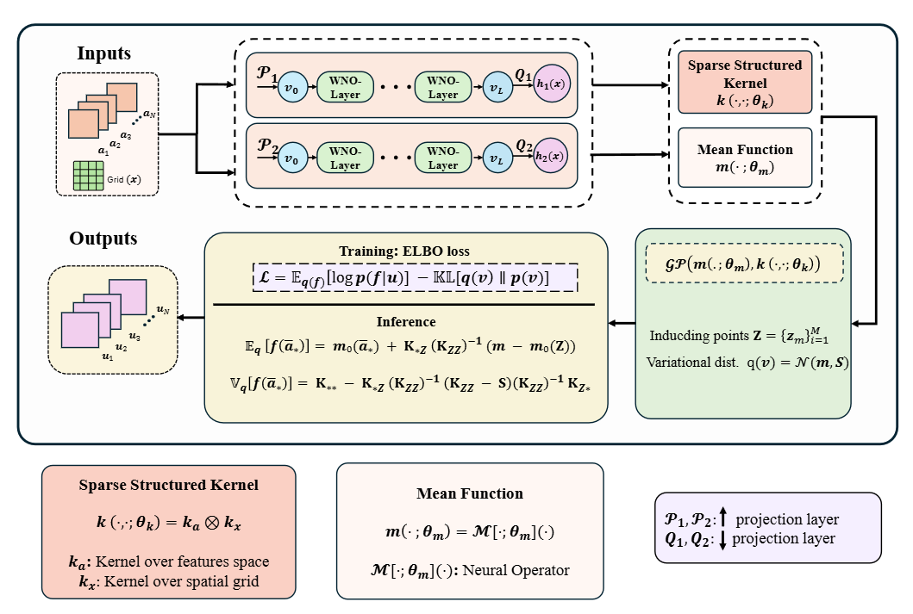
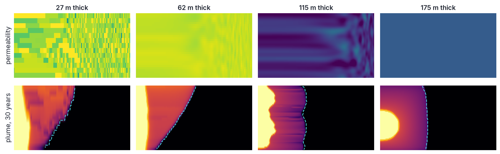
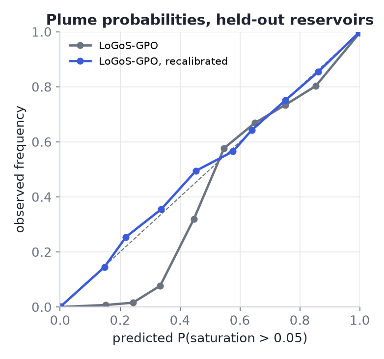
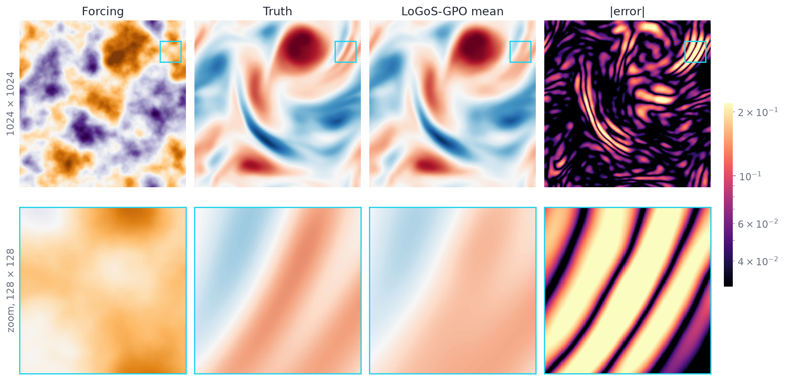
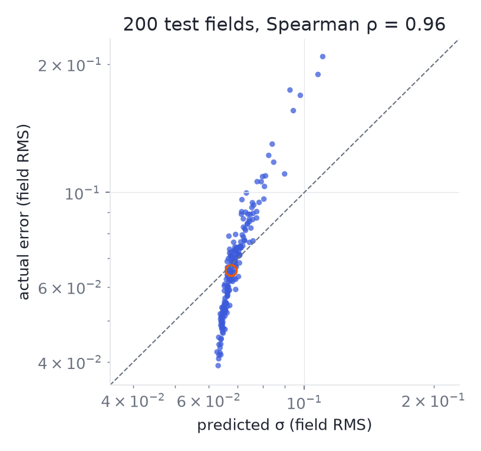

Abstract
Operator learning offers a powerful paradigm for solving parametric partial differential equations (PDEs), but scaling probabilistic neural operators such as the recently proposed Gaussian Processes Operators (GPOs) to high-dimensional, data-intensive regimes remains a significant challenge. In this work, we introduce a novel, scalable GPO, which capitalizes on sparsity, locality, and structural information through judicious kernel design. Addressing the fundamental limitation of cubic computational complexity, our method leverages nearest-neighbor-based local kernel approximations in the spatial domain, sparse kernel approximation in the parameter space, and structured Kronecker factorizations to enable tractable inference on large-scale datasets and high-dimensional input. While local approximations often introduce accuracy trade-offs due to limited kernel interactions, we overcome this by embedding operator-aware kernel structures and employing expressive, task-informed mean functions derived from neural operator architectures. Through extensive evaluations on a broad class of nonlinear PDEs—including Navier-Stokes, wave advection, Darcy flow, and Burgers' equations—we demonstrate that our framework consistently achieves high accuracy across varying discretization scales. These results underscore the potential of our approach to bridge the gap between scalability and fidelity in GPO, offering a compelling foundation for uncertainty-aware modeling in complex physical systems.
Method
A Gaussian process over output fields whose mean is a neural operator and whose covariance factorises into an input kernel and a spatial kernel, each approximated where it is cheap to do so.

Vecchia spatial kernel
\(K_x\) is a Matérn kernel on the grid in nearest-neighbour (Vecchia) form: a sparse inverse Cholesky factor with \(k\) non-zeros per row, so the cost is linear in grid size.
Sparse input kernel
\(K_a\) compares input functions through an embedding of the operator's latent features, with \(M\) inducing points trained by minibatch variational inference: the cost is linear in the number of samples.
Operator mean, Kronecker covariance
The covariance \(K_a \otimes K_x\) never forms an \(Nd \times Nd\) matrix. A wavelet neural operator provides the mean and is refined jointly with the GP through the ELBO.
Accuracy
Relative \(L_2\) test error (%), mean ± std over three seeds on the official benchmark data: the updated release* alongside the values reported in the paper.
| Updated release* | Reported in the paper | |||
|---|---|---|---|---|
| Benchmark | LoGoS-GPO | LoGoS-GPO | GPO | SVGP |
| Burgers | 0.75 ± 0.06 | 0.86 ± 0.07 | 2.89 ± 0.42 | 3.81 ± 0.09 |
| Wave advection | 0.33 ± 0.04 | 0.43 ± 0.11 | 0.63 ± 0.21 | 1.81 ± 0.29 |
| Darcy, notched domain | 0.30 ± 0.02 | 1.38 ± 0.21 | 2.18 ± 0.29 | 5.18 ± 0.47 |
| grid-adapted wavelet depth† | 0.17 ± 0.03 | – | – | – |
| Navier–Stokes | 0.73 ± 0.02 | 2.01 ± 0.53 | 2.21 ± 0.32 | 7.89 ± 0.22 |
| grid-adapted wavelet depth† | 0.21 ± 0.01 | – | – | – |
* Same method, refined implementation: a GPyTorch-related training issue is resolved so the operator mean receives the full likelihood gradient, and the likelihood now adapts its noise to the input. † Wavelet depth matched to the grid resolution. GPO and SVGP retrained with the same pipeline are included in the repository.
Beyond the paper: standard Darcy benchmark
| This release | Reported in the literature | ||||
|---|---|---|---|---|---|
| Benchmark | LoGoS-GPO | Transolver | LSM | GNOT | FNO |
| Darcy flow, 85 × 85 | 0.52 ± 0.00 | 0.57 | 0.65 | 1.05 | 1.08 |
Piecewise-constant permeability to pressure, the standard 1000/200 split. Literature values as collected by Wu et al. (Transolver, ICML 2024). LoGoS-GPO: three seeds, with a calibrated σ that the deterministic models do not provide.
Test predictions
Input, truth, posterior mean, predictive std σ and absolute error on held-out test cases, using the heteroscedastic likelihood described below. In the 2D panels σ and |error| share one logarithmic colour scale.
Navier–Stokes (64 × 64). Forcing field to vorticity. Six test cases spread over the error distribution (10th to 90th percentile).
Darcy flow in a notched triangle (51 × 51). Boundary condition to pressure, on an irregular domain with a slit.
Darcy flow (85 × 85). Piecewise-constant permeability to pressure. The uncertainty traces the permeability interfaces, where the error lives.
Burgers' equation (1024 points). Initial condition to the solution at t = 1. The bottom panel shows the signed error against the 95% interval.
Transonic airfoil (221 × 51 curvilinear mesh). Geometry to Mach number around the wing. The uncertainty concentrates on the shocks above and below the wing, exactly where the error is.
Wave advection (200 points). Initial profile to the advected profile at t = 0.5.
Uncertainty that follows the error
The predictive variance combines the GP posterior over operator residuals with a heteroscedastic likelihood, \(\sigma_n^2(a, x)\), read off the operator's latent features at each grid point. The uncertainty therefore grows where and when the prediction is harder.
Wave advection. The 95% interval (shaded) tightens on smooth regions and widens at the moving discontinuities, which is exactly where the signed error (orange, bottom) concentrates.
| Gaussian NLL ↓ | 95% coverage | σ vs error, within a field ↑ | σ vs error, across cases ↑ | |||||
|---|---|---|---|---|---|---|---|---|
| Benchmark | fixed | adaptive | fixed | adaptive | fixed | adaptive | fixed | adaptive |
| Burgers | -3.90 | -4.47 | 0.97 | 0.94 | 0.07 | 0.32 | 0.47 | 0.78 |
| Wave advection | -4.34 | -5.54 | 0.96 | 0.95 | -0.26 | 0.73 | 0.68 | 0.83 |
| Darcy, notched domain | -4.21 | -4.96 | 0.93 | 0.95 | 0.23 | 0.30 | 0.49 | 0.69 |
| Navier–Stokes | -7.73 | -8.18 | 0.94 | 0.94 | 0.04 | 0.23 | 0.48 | 0.81 |
Test sets, mean over three seeds. σ is calibrated by a single scale on held-out validation fields. Fixed: one learned noise level per grid point. Adaptive: noise read off the operator's features for each input. Correlations are Spearman rank correlations between σ and the absolute error, within fields and across test cases.
Application: CO2 geological storage
Where will injected CO2 go over 30 years? Every answer normally costs a full multiphase-flow simulation. LoGoS-GPO predicts the whole saturation history of a reservoir in one pass, and says how far each prediction can be trusted.
Seven orders of magnitude
Permeability from 0.001 mD to 10 D in layered, channelled and random facies, with anisotropy and reservoir thickness from 12.5 to 200 m.
A near-discontinuity
93% of the cells stay dry. The plume edge is a moving front, predicted at 24 times from 1 day to 30 years.
Eleven inputs per case
Rock maps plus injection rate, pressure, temperature, capillarity and residual water saturation, all varying from one reservoir to the next.

Four held-out reservoirs. Top: permeability. Bottom: true gas saturation after 30 years, with the LoGoS-GPO plume edge dashed. Typical cases, not the best ones.
One reservoir, 1 day to 30 years. Truth, LoGoS-GPO mean, σ, and the probability that the saturation exceeds 5% (a typical detection level), with the true plume edge in orange. The uncertainty rides on the advancing front and along the fast layers, and the probability map hugs the true edge.

Trustworthy risk. When LoGoS-GPO says a cell holds CO2 with probability p, it does about a fraction p of the time (held-out reservoirs; recalibrated on the other half of the test set).
LoGoS-GPO works with any operator mean; here the mean is the published pre-trained U-FNO. Under the same evaluation it keeps U-FNO's accuracy (test error 6.47% vs 6.48%, plume R² 0.978 for both) and adds calibrated uncertainty. Risk forecasts are scored by the Brier score on held-out reservoirs (0.0028 vs 0.0035). Data and U-FNO: Wen et al., Advances in Water Resources 163 (2022), CC BY-NC-ND 4.0.
Scalability
Hardware-independent cost of the GP layer per training epoch, counted in floating-point operations (operator excluded for both methods, shown for reference).
Exact GPO needs eigendecompositions of the full \(d \times d\) spatial and \(N \times N\) input kernels at every step. LoGoS-GPO touches \(k\) neighbours per grid point and \(M\) inducing points per input, so its GP layer stays far below the cost of the neural operator it wraps.
A million outputs per field
Navier–Stokes at 1024 × 1024 (Kossaifi et al. release: rough forcing, 900 training fields). The GP predicts every one of the 1,048,576 grid values of each field, with the operator running at 128 × 128 and its features lifted to the full grid exactly in Fourier space.

One test field, all 1,048,576 points. A typical case (median error). Below: the 128 × 128 patch where the error is largest; even there the mean follows the truth and the error sits in thin bands.

It knows which fields are hard. Each dot is a test field: its predicted σ against its actual error. The ranking is almost perfect (ρ = 0.96); the hardest fields get the largest σ.
Predictions are averaged over the eight rotations and reflections of the torus (reflections flip the sign of vorticity), an exact symmetry of this forcing-to-vorticity map.
BibTeX
@article{kumar2026logosgpo,
title = {From Local Interactions to Global Operators: Scalable Gaussian Process Operator for Physical Systems},
author = {Kumar, Sawan and Tripura, Tapas and Nayek, Rajdip and Chakraborty, Souvik},
journal = {Journal of Computational Physics},
year = {2026},
eprint = {2506.15906},
archivePrefix = {arXiv}
}